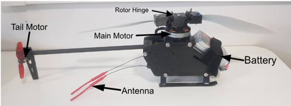
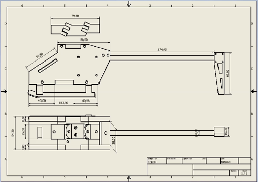
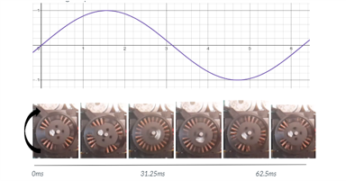
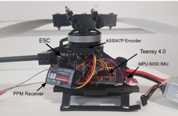

Overview
Designed, manufactured, and tested a swashplate-less unmanned aerial vehicle (UAV), replacing traditional mechanical control with a digital cyclic system. The objective was to simplify helicopter mechanics while maintaining full 4-axis flight control: pitch, roll, yaw, and throttle.
Gallery




Engineering Highlights
- Integrated Teensy 4.0 microcontroller with real-time magnetic encoder feedback
- Developed dual-rotor control algorithm for pitch, roll, and yaw
- FEA analysis performed on airframe and carbon tail boom
- Thrust and PID loop testing conducted in a custom acrylic safety rig
Technical Details
- Electronic cyclic control using dynamic rotor speed modulation
- Magnetic encoder feedback loop for precise rotor indexing
- 3D printed PLA fuselage for rapid prototyping
- Custom C++ firmware adapted from dRehmFlight
Objectives
- Develop a swashplate-less helicopter using fully digital actuation
- Investigate advantages and limitations of electronic cyclic control
- Prototype, refine, and test for stable, controllable flight
- Explore applications for future UAV systems using reduced mechanical complexity
Future Work
- Improve hinge friction and mechanical response
- Implement high-speed strobe testing for rotor pitch visualisation
- Evaluate dual-rotor configurations for increased stability and payload
Skills & Tools
- CAD & Simulation: SolidWorks, ANSYS FEA
- Electronics: Teensy 4.0, ESCs, IMUs, Magnetic Encoders
- Programming: C++, Arduino Framework
- Fabrication: 3D Printing, Carbon Composites
- Testing: PID tuning, thrust measurement, data logging